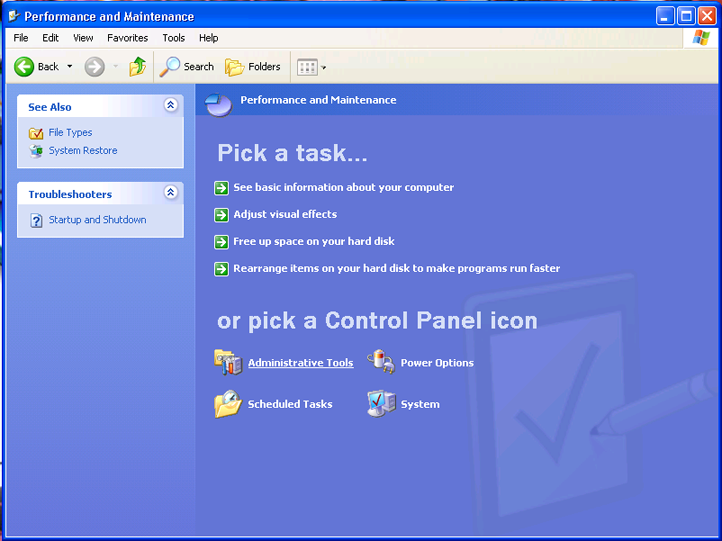
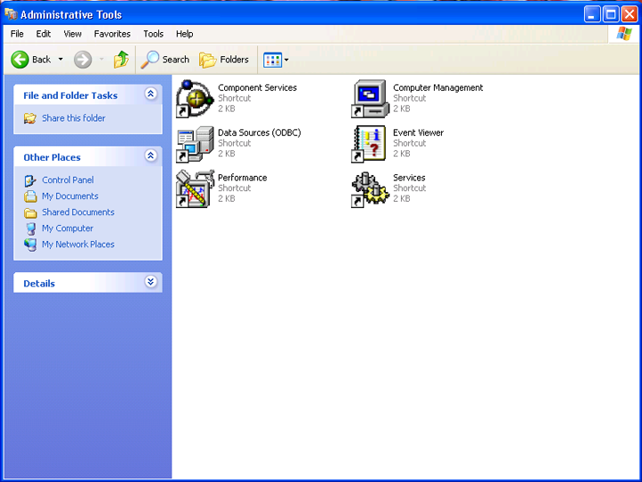
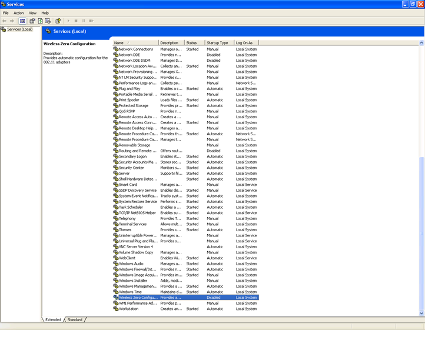
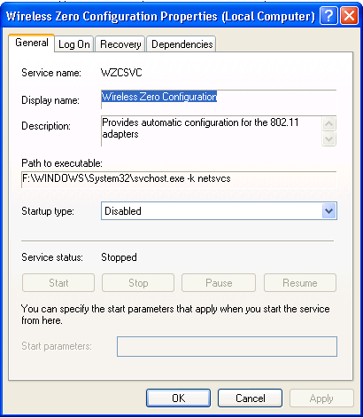
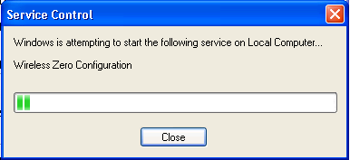

Enable the Windows Wireless Zero configuration service
Enabling the Windows Wireless Zero configuration service.
-
From your desktop, go to Start and select Control Panel
-
In the Control Panel window, select Performance And Maintenance
-
In the Performance and Maintenance window, select Administrative Tools
 -
In the Administrative Tools window, double click on Services
 -
In the Services window, scroll down until you see Wireless Zero Configuration – double click this
 -
If the Startup type if set to Disabled, click on the drop down menu and select Automatic, then click on Apply
 -
In the same window, you should now be able to click on the Start button under Service status – do this now
-
The following screen will pop up briefly as the service is starting
 -
Wait until the Service Control screen closes itself (do not select Close), then select OK in the Wireless Zero Configuration Properties window
-
Now go back and follow the steps for enabling Windows to manage your wireless connection